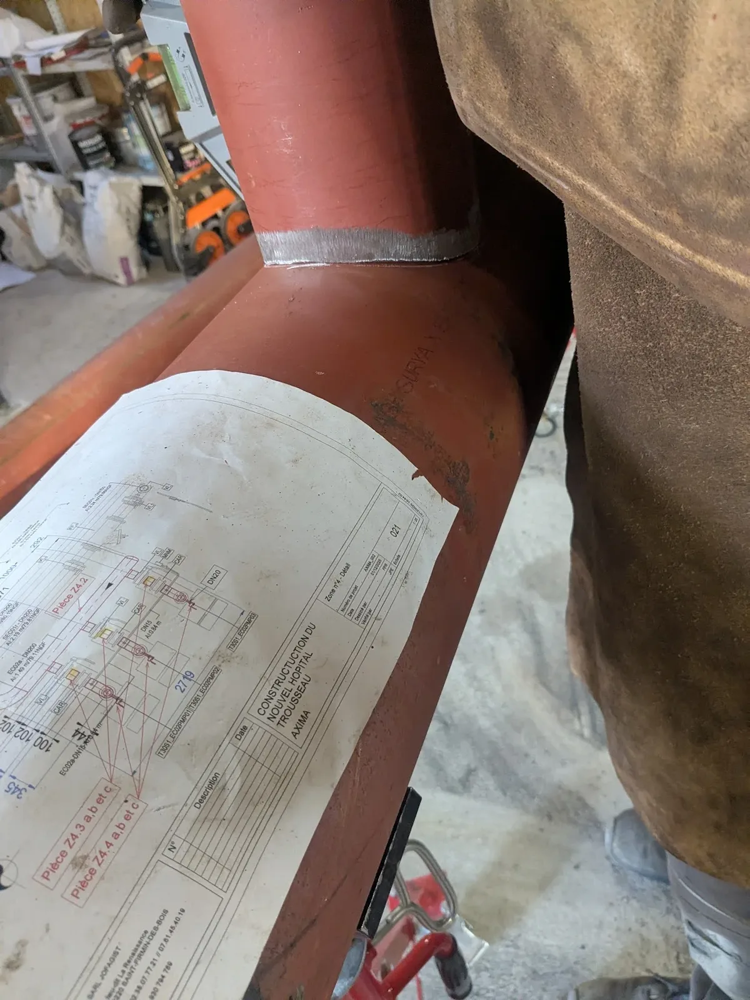
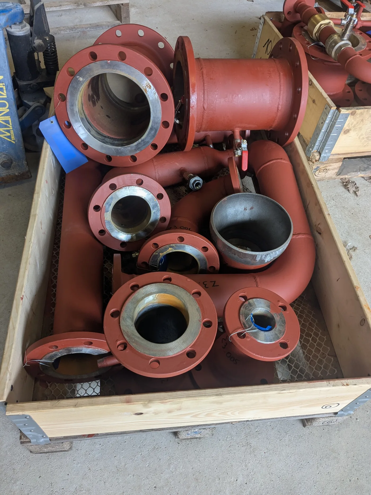

Conseil & Accompagnement en Études de Travaux
JOFAGIST vous accompagne dès la phase d'étude jusqu'à la réception de vos travaux, pour les entreprises, collectivités et particuliers.
Un regard expert dès la phase d'étude pour mieux réussir vos travaux
Anticiper les problèmes techniques, optimiser les solutions, maîtriser les coûts : c'est ce que vous apporte l'accompagnement JOFAGIST dès les premières études de votre projet.
Trop souvent, les problèmes de chantier trouvent leur origine dans une phase d'étude insuffisante ou réalisée sans regard spécialisé. Notre mission : être le conseiller technique indépendant qui vous aide à prendre les bonnes décisions avant de commencer.
Notre expérience terrain en tuyauterie industrielle et en travaux du bâtiment nous permet de vous apporter une vision concrète et pragmatique, loin des études purement théoriques.

Nos missions de conseil et d'accompagnement
Un accompagnement sur-mesure adapté à votre projet et à votre stade d'avancement.
Analyse de faisabilité
Évaluation technique et économique de votre projet avant engagement. Identification des contraintes et des risques dès le départ.
Assistance à maîtrise d'ouvrage (AMO)
Nous représentons vos intérêts face aux entreprises : rédaction de CCTP, consultation d'entreprises, analyse des offres, recommandations.
Suivi et contrôle de chantier
Visites régulières sur site, vérification de la conformité des travaux aux plans et aux spécifications, compte-rendus de chantier.
Estimation budgétaire
Chiffrage préliminaire et estimatif de vos travaux pour vous aider à définir vos enveloppes budgétaires et à prioriser vos projets.
Réception des travaux
Assistance lors des opérations de réception : identification des réserves, vérification des essais et des tests de conformité.
Conseil technique ponctuel
Besoin d'un avis expert sur un point précis ? JOFAGIST répond à vos questions techniques ponctuelles avec pragmatisme.
Un accompagnement pour chaque type de maître d'ouvrage
Entreprises
Extension de site industriel, création d'atelier, mise aux normes, rénovation de réseau tuyauterie. JOFAGIST vous accompagne sur vos projets d'investissement.
- Audit technique de l'existant
- Études de faisabilité
- Consultation d'entreprises
- Suivi de réalisation
Collectivités
Aménagement de bâtiments publics, réseaux d'eau, chaufferies, stations d'épuration. Nous apportons notre expertise pour vos marchés publics et contrats.
- Rédaction de CCTP techniques
- Analyse d'offres
- Coordination des intervenants
- Réception des travaux
Particuliers
Construction neuve, extension, rénovation complète. Vous bénéficiez d'un regard technique expert pour piloter votre projet résidentiel en toute sérénité.
- Vérification des devis artisans
- Conseil sur les matériaux
- Suivi de chantier indépendant
- Assistance à la réception
Comment nous travaillons avec vous
1. Écoute
Nous prenons le temps de comprendre votre projet, vos contraintes et vos objectifs avant toute préconisation.
2. Analyse
Étude technique approfondie de votre situation : plans existants, contraintes réglementaires, faisabilité technique.
3. Recommandations
Rapport clair avec nos préconisations techniques, les options envisageables et leur impact sur le coût et le planning.
4. Accompagnement
Suivi actif tout au long de la réalisation, avec points réguliers et réactivité en cas d'imprévus sur chantier.
Centre-Val-de-Loire et au-delà
Basés en Centre-Val-de-Loire, nous intervenons dans toute la région et nous déplaçons sur l'ensemble du territoire national pour les missions de conseil et de pré-fabrication industrielle.
Pour les collectivités et entreprises situées hors région, nous proposons des missions de conseil à distance (téléconsultation, analyse de documents, reporting) complétées de visites sur site planifiées.
Centre-Val-de-Loire
Loiret, Loir-et-Cher, Eure-et-Loir, Indre, Indre-et-Loire, Cher
Pré-fabrication : toute la France
Livraison de sous-ensembles de tuyauterie partout en France métropolitaine.
Conseil à distance
Visioconférence, analyse de plans et documents, rapport écrit : disponible partout.

Votre projet mérite un regard d'expert
Décrivez-nous votre projet et obtenez une première analyse gratuite. Nous vous répondons sous 48h.